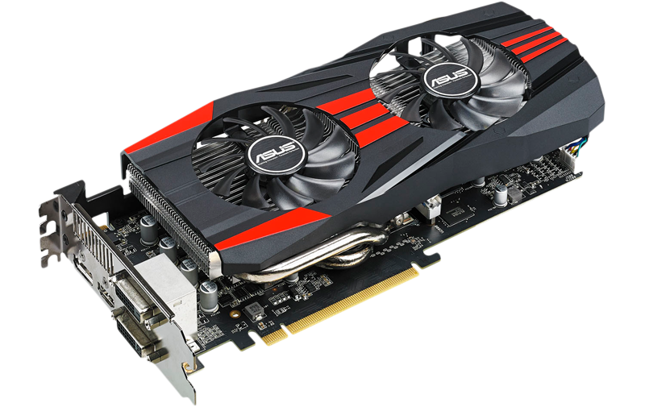
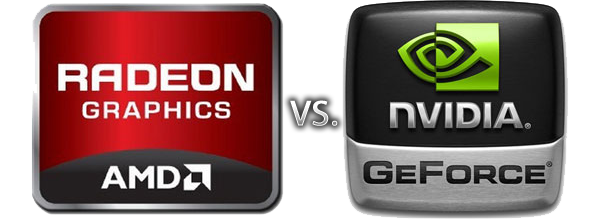

Videokaart kiezen
Kenmerken
De videokaart zorgt ervoor dat de codes beeld wordt, als je een Desktop PC wilt bouwen en je hebt een processor met Integrated Graphics, dan kan je deze stap overslaan. Zo niet, dan zijn Integrated Graphics niet goed genoeg zijn voor wat je wilt doen.
Filters
Bij een videokaart heb je net zoals bij ram de hoeveelheid en de snelheid, alweer is de hoeveelheid in GB, maar dit keer is de snelheid in GHz. Voor desktop is minimaal 1 GB op 0,5 GHz al genoeg, maar voor gaming heb je zeker wel 4 GB op 1 GHz nodig en voor een workstation heb je wel minimaal 6 GB op 1 GHz nodig. Dus stel maar bij de filters in wat je beste past bij wat je wilt gaan doen.
Merken
Van videokaarten zijn de bekendste merken waar de chips vandaan komen, Nvidia en AMD. Nvidia is bekender dan AMD door hun Nvidia GeForce GTX series, en ook omdat de AMD chips vaak veel heter worden als het op videokaarten aankomt. Als je Nvidia kiest zou ik niet lager dan de 900 series (dus de GTX 950, 960, 970, 980, enzovoorts) gaan aangezien die gewoon te oud zijn. Maar je zult zien dat die videokaarten niet do Nvidia worden verkocht, dat is ook niet zo, Nvidia verkoopt de chips aan merken zoals MSI, GigaByte, Asus, etc. Deze merken zetten er dan hun eigen koeling op, maken er een eigen design bij en verkopen het zo aan de consumenten. Toch zou ik bij deze merken niet voor andere merken kiezen dan MSI, GigaByte, Asus en EVGA, aangezien deze gewoon het meest betrouwbaar zijn.
Dit was Stap 5 van Deel 1, je kunt nu doorgaan naar de volgende stap